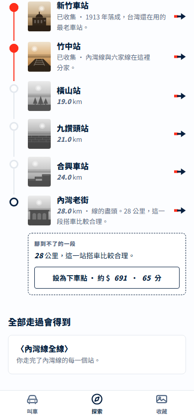
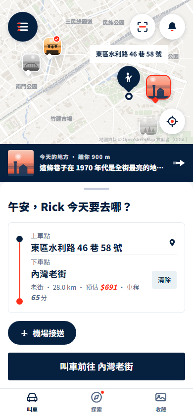
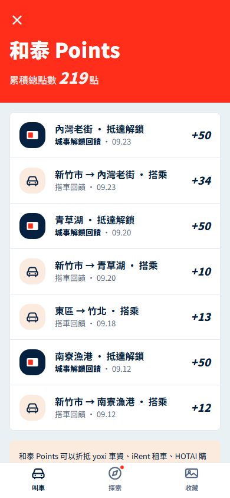

yoxi 的題目
叫車 app，只有要出門時才被打開
不搭車的日子，yoxi 沒有被打開的理由
總長 2:45.4（165.4 秒，實測 TTS 長度），23 個鏡頭 · 上限 3:00 · 黃底的格＝正式版要真實錄製的動作 · 旁白與數字的真相在 shots.json／script.md
yoxi 的題目
叫車 app，只有要出門時才被打開
不搭車的日子，yoxi 沒有被打開的理由
yoxi 城事
城事負責想去，yoxi 負責到得了
不搭車也會打開的城市探索與收藏
發現一個地方 → 叫車去那裡 → 點數回流和泰 Points








AI 在城事裡做四件事
推薦・內容・明信片・回顧
① 依叫車時段、熱點與你的足跡，推薦今天的地方
② 地方內容：AI 起草 → 城市編輯審 → 有出處才上架
③ 依地點、季節、光線生成明信片與長輩圖
④ 把一天、一週自動寫成回顧
路線圖第 0 步
不動分頁、不動叫車首頁，今天就能上
六條防護承諾：叫車關鍵路徑 4 下不變、收合態 0 像素改動…
量在原型 home.html，每一條都能當場重跑；合一版 app 只有④有測試
yoxi 題：不搭車，也打開 yoxi
yoxi 城事
github.com/Ricky610329/Yoxi_app_design
畫面為原型；明信片與插圖為 AI 生成示意；地圖 © OpenStreetMap 貢獻者